.
czyli jak to jest z tą gorszą rozdzielczością matryc kolorowych
18-06-2020
|
WSTĘP Tak się ciekawie składa, że posiadam dwie identyczne kamery mono i kolor, mianowicie, Atik Titan mono i Atik Titan kolor. Obie posiadają piksel o rozmiarze 7,4 mikrona. Ale to nic. Tak się ciekawie składa, że posiadam też dwie kamery mono i kolor o identycznym rozmiarze piksela, a mianowicie ASI 120MM i ASI 224 MC, o rozmiarze piksela 3,75 mikrona. Ale to nic. Tak się ciekawie składa, że pierwsza para kamer posiada piksel 2x większy niż druga para, co jest kolejną bardzo przydatną okolicznością. Istnieją więc wszelkie warunki do przeprowadzenia ciekawego testu porównawczego :) A na czym on będzie polegał? Istnieje nieustanna wątpliwość, ba, pewność bym rzekł, iż z racji posiadania maski Bayera, sensory kolorowe posiadają gorszą rozdzielczość obrazowania niż sensory monochromatyczne, i właśnie to zagadnienie będzie obiektem mojego badania. Jednak, aby wykluczyć wszystkie nieprzewidywalne czynniki, test nie będzie wykonany teleskopem pod niebem, lecz w kontrolowanych warunkach laboratoryjnych, czytaj pokojowych. TEST nr 1 - Paski Anatomia testu: Test wykonałem za pomocą ułożonego stabilnie na podłodze tubusu teleskopu Bresser 76/350 podłączając do niego kolejno badane kamery. Za badany/fotografowany obiekt posłużył mi pasek pleksi od drukarki z gęsto narysowanymi kreskami. Gęstość kresek to 7 kresek na 1 mm, patrz poniżej. . 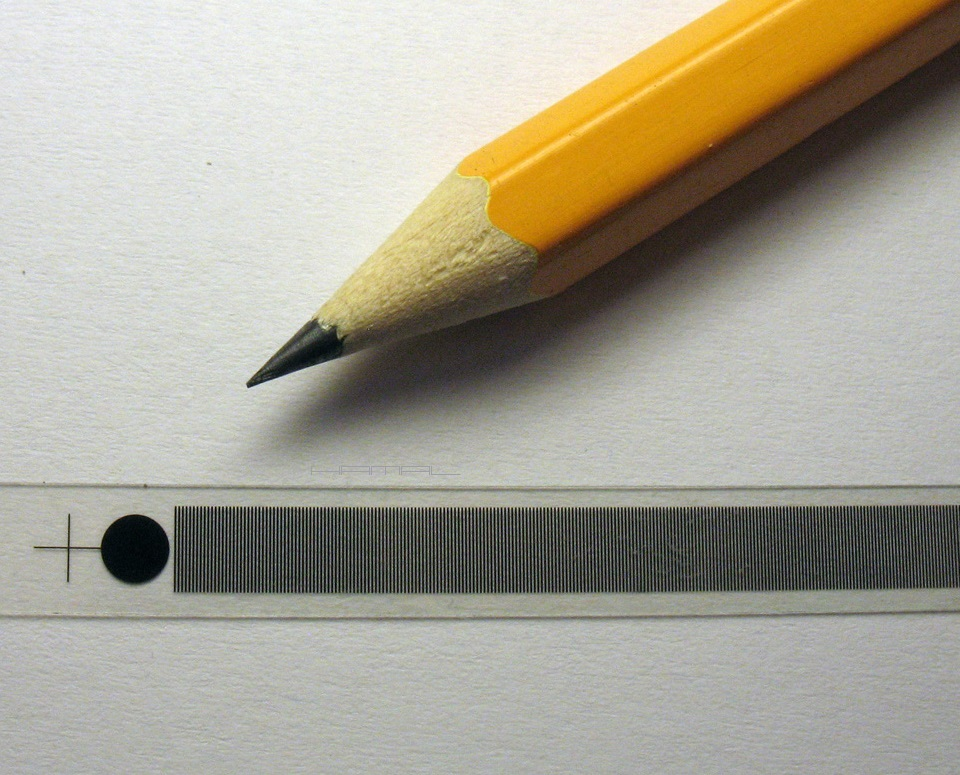 W pierwszej kolejności postanowiłem wypróbować kamery Atik Titan mono i Atik Titan kolor Założeniem pierwszej próby było zadać ekstremalne warunki obrazowania poprzez zgranie pasków i przerw z pikselami kamer. Dla mojego zestawu zgranie uzyskałem, umieszczając pasek w odległości 4 metrów od teleskopu, w ten sposób uzyskałem rząd pikseli-kreska, rząd pikseli- przerwa między kreskami, rząd pikseli-kreska, rząd pikseli- przerwa między kreskami itd. - Atik Titan mono Paski względem pikseli sensora. .  Poniżej widzimy obrazy, jakie ukazały się na ekranie komputera. Atik Titan mono - Pełne zgranie pikseli i linii na pasku, pełne odwzorowanie detalu, czytaj pasków. Jasny rząd pojedynczych pikseli i ciemny rząd pojedynczych pikseli. . 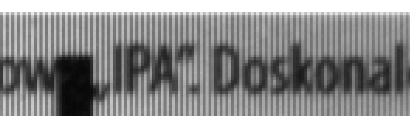 - Atik Titan kolor Atik Titan kolor - Podobnie jak powyżej, zgranie pikseli i pasków (z ustawieniem pasków na liniach z udziałem pikseli czerwonych i zielonych). Efekt? Poniżej. . 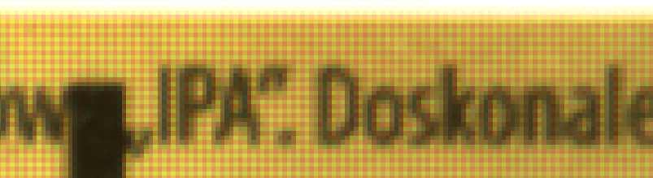 Paski względem maski Bayera. . 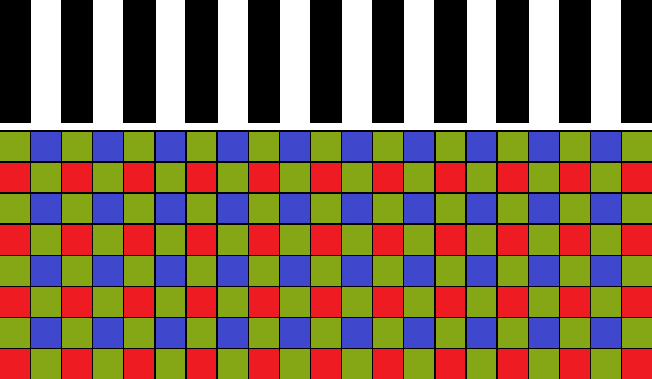 Atik Titan kolor - Podobnie jak powyżej, zgranie pikseli i pasków, ale (z ustawieniem pasków na liniach z udziałem pikseli niebieskich i zielonych). Efekt? Poniżej. . 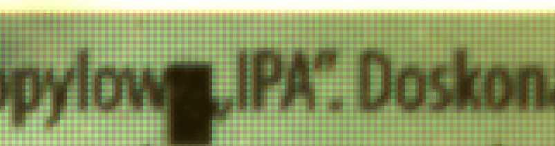 Paski względem maski Bayera. . 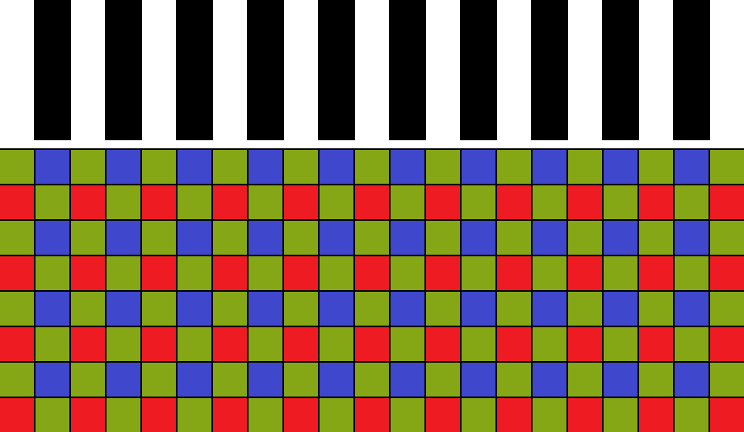 Bardzo długo próbowałem za pomocą kamery kolorowej uzyskać paski, takie jak w kamerze mono (aby wykluczyć mikro niedokładności jako przyczynę), jednak mimo wielu prób, misternego dobierania odległości i subpikselowego przemieszczania obrazowania względem pasków, innego efektu, niż oba powyższe, kolorową kamerą nie uzyskałem. Za przyczynę uznać należy pewne uwarunkowania w procesie interpolacji maski Bayera, ponieważ RAW kolor (poniżej), sprawia wrażenie, jakby jednoznaczne pasy i przerwy po procesie interpolacji miały być tylko formalnością. Pozostaje się pogodzić z faktem, iż w tak krytycznych warunkach, niesposobna uzyskać "czystych" pasów i przerw, mimo idealnego zgrania ich z pikselami, za pomocą kamery kolorowej. . 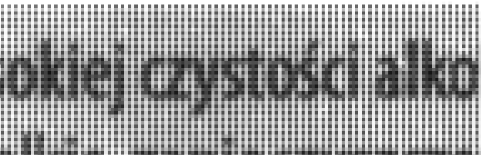 Skala 200% . 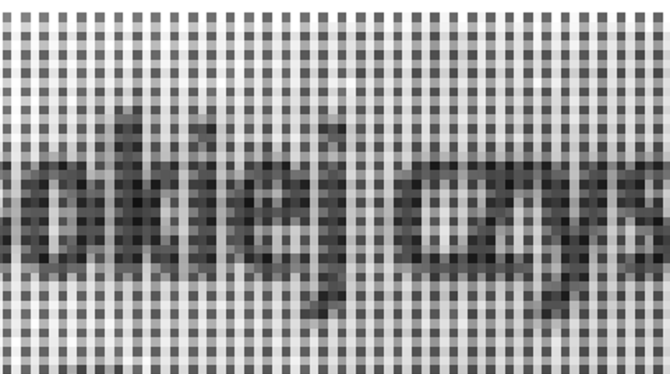 Kamery Atik sprawdzone, pora na kamery ASI, ciekawi głównie wynik ASI 224 kolor, ponieważ posiada ona dwa razy mniejszym piksel niż kamera Atik Titan kolor. Odległość teleskopu od badanych pasków została ta sama, aby tym razem kamery obsługiwały każdy pasek za pomocą dwóch pikseli i gdyby wynik był podobny jak powyżej, stanowiłby gwóźdź do trumny kamer kolorowych. - ZWO ASI 120 mono Ale jeszcze na rozgrzewkę ASI 120 mono, efekt wiadomy, bo to przecież po 2 piksele mono na każdą kreskę. . 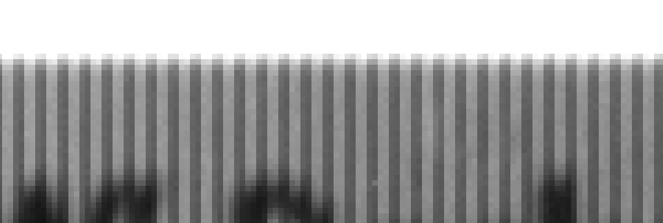 - ZWO ASI 224 kolor Jak wypadnie ASI kolor? Zobaczmy. . 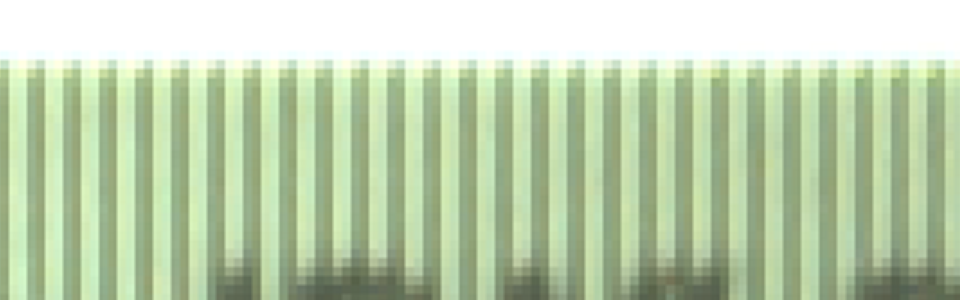 Dała radę! Przerwy między liniami są dobrze widoczne, pogromu kamer kolorowych nie ma. Można więc uznać, że znana zasada -minimum dwa piksele na obrazowany detal- zwłaszcza w kamerach kolorowych, ma się dobrze. Jeszcze jako ciekawostka, różne sposoby debayeryzacji ASI224MC, aby Wam pokazać, jakie są różnice i jak się ten proces zachowuje w tak ekstremalnych warunkach. . 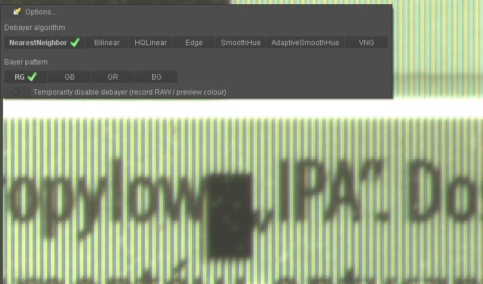 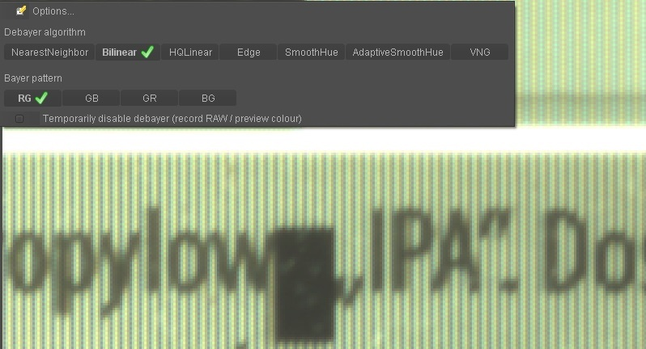 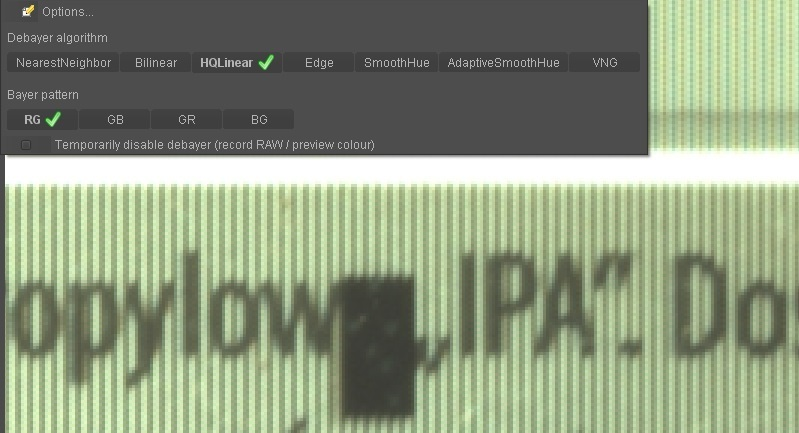 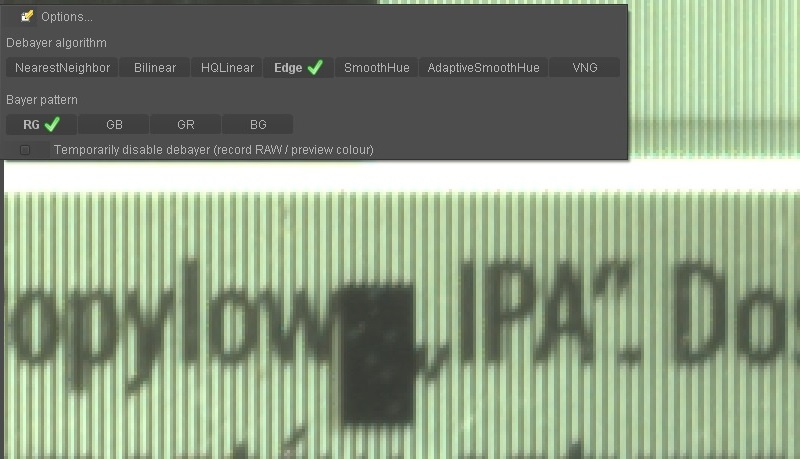 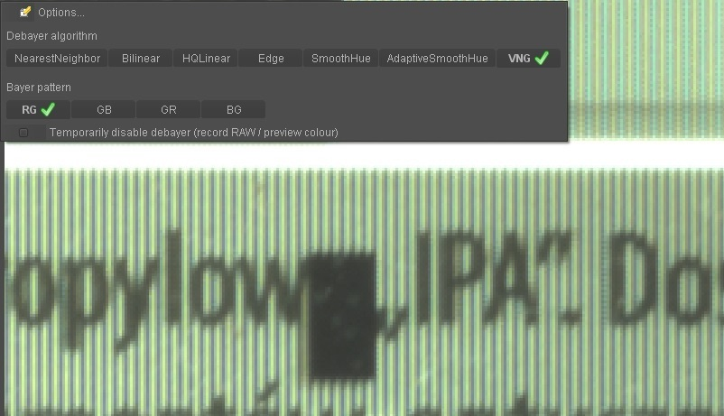 No dobrze, kreski sprawdzone, ale obrazowanie to zazwyczaj są różne kształty, czy wtedy też kamera kolorowa okaże się słabsza od kamery mono ? TEST nr 2 - Litery Anatomia testu: Test wykonałem za pomocą położonego stabilnie na podłodze tubusu teleskopu Bresser 76/350 podpinając do niego kolejno badane kamery. Za badany/fotografowany obiekt poczyniła mi etykieta z drobnymi napisami, różnorodność kształtów liter dobrze nadaje się do takich zadań. -- Atik Titan mono + Atik Titan kolor Skalę obrazowania dobrałem tak, aby kamery pracowały na podpróbkowaniu, mianowicie, każdy detal był obsługiwany przez zbyt małą ilość pikseli, nie będziemy przecież ułatwiać życia kamerze kolorowej. Poniżej prezentuję zrzuty z ekranu komputera. Atik Titan mono. . 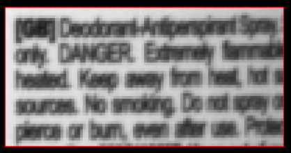 Atik Titan kolor-kolor (zdebayeryzowany). . 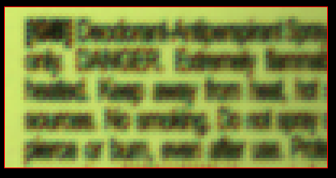 Atik Titan kolor-luminancja mono. . 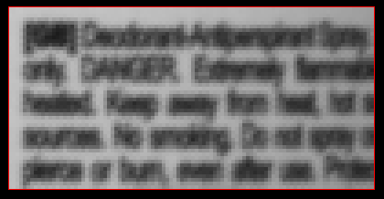 Atik Titan kolor-fit (natywne wartości pikseli z matrycy). . 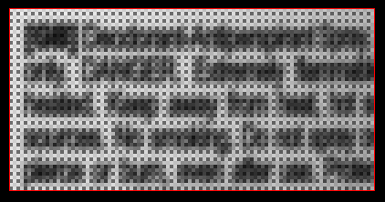 Jak widać, już na podglądzie, nie zapowiada się nic dobrego dla kamery kolorowej, ale nie przesądzajmy, astrofotografia to nie pojedyncze zdjęcia, lecz ich setki, czasem tysiące, zgrajmy jak najlepszy materiał z obu kamer, zestackujmy i zobaczymy, co wyjdzie. Próba to po 1000 klatek, na kamerę mono i kolor, z migrowaniem subpikselowym obrazu. Nie jest łatwo tworzyć takie materiały ani je stackować, jeśli ktoś ma ochotę spróbować swoich sił w stackowaniu, to podaję linki do materiałów MONO i COLOR. Do tak misternej roboty ze znanych mi programów, a znam wiele, nadaje się jedynie Registax 5, to niesamowity program do takich zadań i do astrofotografii LIM, ale niestety... jest niedoceniany, no bo przecież to stary poczciwy Registax :] Poniżej prezentuje moje surowe stacki bez jakiejkolwiek obróbki graficznej. Co powiecie? Dziwi naprawdę nikła różnica detalu, prawda? Może jednak kamery kolorowe przy fotografii w dużej skali, głównie obiektów US, nie są na tak przegranej pozycji, jak się przyjęło powszechnie sądzić :) . 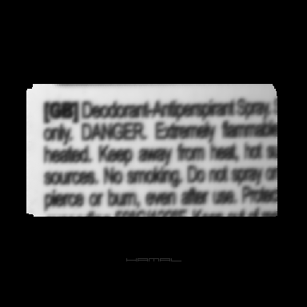 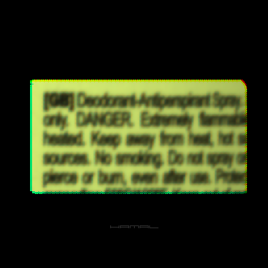 
|